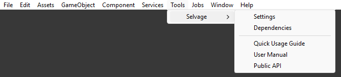

Install Selvage
Import Selvage into your project, and find its menus.
Requirements
Selvage has the following requirements:
- Unity 6.0 or later.
- Any build target, with the Mono or IL2CPP scripting backend.
- The Mono Cecil package (
com.unity.nuget.mono-cecil) 1.10 or later. Selvage's compilation step uses it to inject your members. Importing Selvage installs it if your project doesn't have it.
The following packages are optional:
| Package | Used for |
|---|---|
Addressables (com.unity.addressables) 1.19 or later | Providing addressable assets. For more information, refer to When Selvage loads an asset. |
Unity UI (com.unity.ugui) | The demo. |
Install the package
To install Selvage, perform the following steps:
- Go to Window > Package Manager.
- Select My Assets, then select Selvage.
- If the package isn't downloaded yet, select Download.
- Select Import.
- In the Import Unity Package window, select Import.
When the import finishes, Selvage is active.
If the Console window displays Selvage: automatic injection is off with a message that names the Mono
Cecil package, the package is missing, for example because it was cleared in the import dialog. To add it, perform
the following steps:
- Go to Window > Package Manager.
- Select + > Install package by name.
- Enter
com.unity.nuget.mono-cecil, then select Install.
Selvage menus
Selvage adds the following menu items to the Unity Editor:

| Menu item | Description |
|---|---|
| Tools > Selvage > Settings | Opens the Selvage page of the Project Settings window. For more information, refer to Project Settings reference. |
| Tools > Selvage > Dependencies | Opens the Dependencies window. For more information, refer to Dependencies window reference. |
| Tools > Selvage > Quick Usage Guide | Opens the Quick Usage Guide. |
| Tools > Selvage > User Manual | Opens the User Manual. |
| Tools > Selvage > Public API | Opens the Public API reference. |
| Assets > Create > Selvage > Provide Definition | Creates a Provide Definition in the selected folder. For more information, refer to Provide assets. |
| Component > Selvage > Provide Tuning | Adds a Provide Tuning component to the selected GameObject. For more information, refer to Provide Tuning reference. |
Package contents
Selvage installs into Assets/Selvage, which contains the following folders:
| Folder | Contents |
|---|---|
Runtime | The Selvage runtime. |
Editor | The Dependencies window, the Selvage page of the Project Settings window, and the Inspector window additions. |
Compatibility | Modules for migrating a project from Zenject or VContainer. Each compiles only when its container is in the project. |
Tooling | The compilation step that injects your members, and the code analysis. |
Testing | Connects Selvage to the Test Runner: the [Provide] classes of the tests that run apply during the run, and a provider a test adds is removed when the test ends. Compiles only with the Test Framework package. |
Tests | Selvage's own tests. They compile only when the project defines SELVAGE_TESTS. For more information, refer to How do I run Selvage's tests? |
Demo | The demo scene and its scripts. For more information, refer to Explore the demo. |
Documentation | The Quick Usage Guide, the User Manual, and the Public API reference. |